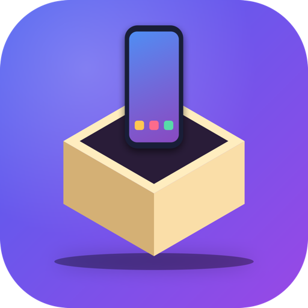
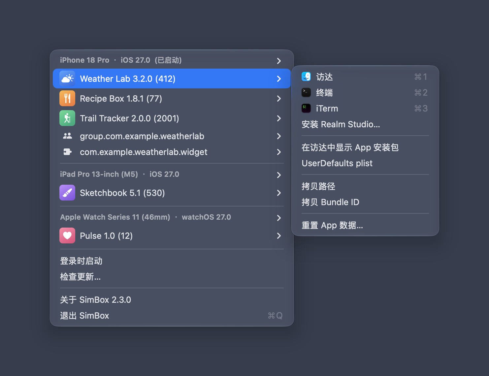

一键打开 iOS / iPadOS / watchOS / tvOS 模拟器里已安装 App 的沙盒目录、App Group 和 App Extension 容器。常驻菜单栏，按模拟器分组，随用随开。 Open the sandbox, App Group and App Extension containers of apps installed in your iOS / iPadOS / watchOS / tvOS simulators in one click — right from the menu bar.

每个 App 和容器的子菜单都提供常用的打开方式和开发调试操作。Every app and container has a submenu with the actions you need while developing and debugging.
点击 App 条目本身时，按住不同修饰键打开到不同位置。Hold a modifier key while clicking an app to choose where it opens.
| 修饰键Modifier | 打开位置Opens in |
|---|---|
| 无None | Finder |
| ⌥ Option | Terminal |
| ⌃ Control | Commander One （若已安装）(if installed) |
不确定芯片类型？打开「苹果菜单 › 关于本机」，“芯片”一栏写着 Apple M… 的选 Apple 芯片版，写着 Intel 的选 Intel 版。Not sure which chip you have? Open › About This Mac: “Apple M…” means Apple silicon, “Intel” means Intel.
SimBox_v<版本>_arm64.dmg 或 SimBox_v<版本>_x86_64.dmg）。Download the DMG for your chip (SimBox_v<version>_arm64.dmg or SimBox_v<version>_x86_64.dmg).